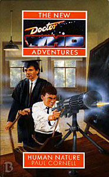

|
Human Nature
|
BASIC PLOT DOCTOR COMPANIONS Wolsey the cat, who joins the TARDIS at the end of the adventure. He'll be part of the TARDIS crew until The Dying Days, whereafter he stays with Bernice for the Benny NAs and the Big Finish novels and short stories. He's probably the second most featured companion of all time by this point. Pg 209 Romana appears briefly, in a possible future. MATERIALISATION CIRCUIT Pg 15 Farringham, April 1914 (offscreen). Pg 207 On Gallifrey, in a possible future. Pg 253 Norwich, April 1995 (offscreen). PREPARATORY READING CONTINUITY REFERENCES "I met someone called Guy, he took on overwhelming odds and then he happened to die. May have died." Sanctuary Pg 2 "I remember seeing the look on Clive's face when he heard that a dear friend of his had hanged himself." Clive was a member of Benny's archaeological expedition in Love and War. "He hadn't followed up on his pledge to take me to Blackpool" The Doctor's often not following up on such a pledge, as just such a promise was cut from the end of Revelation of the Daleks. He does get there in The Nightmare Fair, though. "No. They're all gone. Little Johnny Piper - no, sorry, different train of thought." Love and War (but see Continuity Cock-Ups). "If I didn't know better, I'd say he was thinking as hard about the last five minutes of Guy's life as I was." Sanctuary. Pg 3 "The thing broke down, of course, just before Heaven" Love and War. "I reversed the polarity of the communications coil, by the way" Similar to what the third Doctor seemed to do to the neutron flow. Pg 4 "I made clay models. Of the Zygons." Terror of the Zygons, The Bodysnatchers. Pg 5 "The TARDIS materialized with that noise it has (sorry I've never been able to come up with a good description)" Reference to Terrance Dicks' description of the TARDIS materialisation as a "wheezing, groaning sound" in the Target novelisations and beyond. Pg 7 "'Jac,' said a young woman with short hair and interesting ear-rings." This is Jac Rayner, later to be editor and author of BBC books. She was part of the basis for Benny originally, hence her interesting earrings, of the sort you can see on the cover of Love and War (which thankfully disappeared from Benny's wardrobe in due course). "I'm here researching the origins of the market for Ellerycorp." Ellerycorp was mentioned in Love and War. "There was another short-haired woman with the eyes of a Traveller Priestess who was called Sarah." This is Sarah Groenewegen author of a few Big Finish short stories and whose surname turns up in approximately every other New Adventure (notably First Frontier and Return of the Living Dad). Pg 8 "So we had to go away. There were so many of them. I think... I hope it was quick for him." Sanctuary. Pg 12 "Opek to a Grotzi he is!" Opeks were the currency of choice in The Ribos Operation, while Grotzis were Glitz's favourite cash, in The Trial of a Time Lord and Dragonfire. Pg 19 "She'd popped into the art shop where Mr Sangster had provided her with some oils that she needed." This namechecks Jim Sangster, a British fan who can be seen on several DVD documentaries. Pg 23 "Many hands spoil the broth" Smith's misquoting of proverbs is a reference to the Season 24 Doctor doing the same thing in Time and the Rani (and once in Delta and the Bannermen). Pg 25 "If being in the same galaxy is near, then the Sontarans are near the Rutans, for goodness' sake!" The Sontarans were first seen in The Time Warrior and the Rutans were first seen in The Horror of Fang Rock. Pg 28 "Dr Smith, when I took you on, it was largely on the strength of a superb set of references, possibly the best I have ever seen, from the Flavian Academy of Aberdeen." Probably a reference to Flavia, who featured in The Five Doctors and The Eight Doctors (and who is seen here in a possible future on page 208). Pg 31 "Intelligent seaweed?" Fury From the Deep. Pg 33 "There was somebody. When I was very young. Her name was Verity." Smith's first girlfriend shares the same name as the show's first producer, Verity Lambert. "'Is there anything you don't like?' 'Burnt Toast.'" Ghost Light. Pg 34 "And then They came, and they had some sort of big plan that We didn't really understand and just Them being Them made us, who had been all sorts of things, into We." Daleks, as mentioned in Love and War. Pg 35 "The Old Man and the Police Box" Smith's story is a take on the Cushing movies. Pg 36 "Native to this planet, a touch of Artron energy, therefore she's been in a TARDIS." Artron energy was first mentioned in the Deadly Assassin. Benny isn't actually native to Earth, as she was born on Beta Caprisis, but we can assume the Aubertides simply mean that she's human. Pgs 45-46 "Thing Not To Let Me Do [...] Eat meat, if you can." The Doctor's been vegetarian (with a few exceptions) since The Two Doctors. But see Continuity Cock-Ups. Pg 56 "Jonathan had been in the Navy, broke his nose in Pompey Barracks. Bit of a clumsy so and so. Which was odd, for a sailor." Smith's memories of Benny's "father" are clearly based on Harry Sullivan. "Smith pondered on his image of sailors. He'd known of two, and both seemed very unlike everything he knew about the profession." The two sailors are Harry Sullivan and Ben Jackson. Pg 66 "There'd been somebody called Barbara, hadn't there? In Rome" The Romans. Pg 69 "An old woman taught me how to read, at my father's hearth. Her name was Sarah McLeod. She died at Culloden." This may be one of Jamie's memories, so presumably Sarah McLeod died at the beginning of The Highlanders. Pg 76 Reference to Ace. Pg 79 "End my life." The Happiness Patrol. Pg 82 "He invented a way for them to start another life when they died, and gave them another heart, hoping this would make them joyful and happy. But they were just as dull, and now they lived longer. Worse than that, they no longer had children, so there was nobody noisy around the place to ask questions." Time's Crucible. Pg 87 "They were both dressed in togas, lying on a lounger in the courtyard of a villa." The Romans. "Smith was about to reply, but then he was staggering back from a door, dropping his briefcase and clutching his nose" This is Harry's story, as mentioned in The Ark in Space. "Around him men in uniform were all dancing with their partners." UNIT, presumably. "Under an orange sky, a group of figures stood around a singing structure, a million fine chords sighing in the wind." Gallifrey. 'Spirals of microscopic data had been flowing into the loom for days." The looms were first mentioned in Time's Crucible and have been present throughout the background of a number of NAs. "Something shaped itself into her arms. A male child. 'Again?' said the child." This is a reference to the Doctor being born twice, as hinted at in Time's Crucible ("Before regeneration there was reincarnation") and as we'll see in Lungbarrow ("I can remember waiting to be born.") Pg 92 'This knight of yours -" Guy, Sanctuary. Pg 94 "Death glared at him. 'I'm the sister of Time and Pain and several more. We're the dreams of the Time Lords. We leak out across the universe, and occasionally someone like the Timewyrm gives us form. Certain Time Lords, in their nightmares, or in states like you're in, make sordid little deals with us. We might even take them on as our Champions. We make them pay a price.'" Death, Time and Pain have featured on and off throughout the NAs. Death first appeared in Timewyrm: Revelation, Pain in Set Piece. The Timewyrm appeared in Timewyrm: Genesys through Revelation. The seventh Doctor made a deal with Time and became Time's Champion (first mentioned in Love and War). He'll eventually pay the price in So Vile A Sin. "Do you know what a respiratory bypass system is?" Pyramids of Mars. Pg 99 "'Heat barrier?' 'Bit showy.' 'Fear barrier?'" We saw a heat barrier in The Daemons and a fear barrier in Nightshade. Pg 102 "The girls would understand. Well the Duchess - Verity - had, at any rate." Reference to Polly, whom Ben always called 'Duchess'. "This must be what Sherlock Holmes felt like when he was thinking about a problem... Good, actually, if Conan Doyle would write a couple more stories now, he could ask The Strand whatever fee he liked." The Doctor met Holmes in All-Consuming Fire and Doyle in Evolution. Pg 111 Reference to Ace. Pg 122 "One surmises that they're looking for a way to ease their periodic infertility." This is more telling than was realised at the time, since the Time Lords became infertile in Time's Crucible, but would regain their fertility in Lungbarrow. Pg 123 "We were only saved by Greeneye's intuition that you could outrun a time loop by completing the action spiral faster and faster." Something similar happens with the chronic hysteresis in Meglos. Pg 125 "There was no need for any large-scale action that those with Time-Space Visualizers tend to notice" We saw one of these in The Space Museum, The Chase and The Eye of the Giant. However, it's actually called a "Time and Space visualiser" on screen, despite what generations of reference guides and certain New Zealand fanzines would have us believe. Pg 127 "He pulled out a ring with a purple jewel set into it. 'A little gaudy. Don't know where I got it. Perhaps I wore it once.' [...] She grabbed his hand and held the ring up to his finger. 'Wait a moment - this doesn't fit you!' [...] 'It was mine, I'm sure. Maybe i changed?'" It seems fairly clear that this ring is meant to be the first Doctor's ring, only that was blue, not purple. Possibly the jewel was made of a material that changed colour after several centuries, or maybe the Doctor just had the stone replaced at some point. Pg 128 "This old heart of mine... is weak for you... that's the title, but I don't know who sings it." It's the Isley Brothers, who we'll meet in Happy Endings. Pg 130 "We could do with a few Martians right now." First seen in The Ice Warriors. "Were you in love with your knight Bernice?" Sanctuary "There's my dad out there somewhere, Alex!" Bernice will later meet him in, appropriately enough, Return of the Living Dad. Pg 134 "The finger caught Rocastle in the centre of the forehead. He stared at it. then he crumpled into a heap." The Doctor does this in Survival. Pg 141 "'You've met Rudyard Kipling?' Benny burst out laughing and used her freehand to pat him on the shoulder. 'No,' she assured him. 'But I know a man who has.'" The Doctor met Kipling in Evolution. Pg 143 "I was just thinking of cocoa." This mirrors the First Doctor and Cameca, the last women he was engaged to, sharing a cup of cocoa in The Aztecs. Pgs 145-146 "The bursar, Mr Moffat, a young Scotsman with curly hair and permanently perplexed eyes, entered." This is based on Steven Moffat, later to be a fellow writer in the 2005 series. "He knows as much about Aberdeen as the average Cockney, and seems to have trouble with his accent. Altogether it's a pretty poor performance." This may be a reference to Sylvester McCoy's acting ability, although McCoy is actually Scottish. Pg 159 "Gallifrey! The Hoothi! Ace!" The Hoothi were first mentioned in The Brain of Morbius and appeared in Love and War. Pg 171 "You had a cat. Chick. It died in a very bad way." Warlock. Pg 188 "When I was a boy, I used to go and see a man who lived on a hilltop" The hermit, first mentioned in The Time Monster and seen in Planet of the Spiders. Pg 193 "A boy in my class who so hated and loved me that he kept upsetting my experiments." The Master. Pg 207 "It's one possible future. This is the Doctor's home. This is Gallifrey." The devastated Gallifrey in a possible future is reminiscent of the Earth of 1980 in Pyramids of Mars. Pg 209 "Will you tell me how to use this crown?" This is the Presidential circlet, seen in The Invasion of Time. Pg 210 "Smith thought about a dying flutterwing." In The Pirate planet, Romana says her thesis was on the life cycle of the Gallifreyan flutterwing. A dying flutterwing is also important in Set Piece (pg 198). Pg 213 Reference to Guy (Sanctuary). Pg 219 "I think I've developed this phobia about letting people get surrounded by men with swords." Sanctuary. Pg 228 "It's about not being cruel. It's about not being afraid." This is a restatement of Terrance Dicks's mantra for the series, that the Doctor is never cruel or cowardly. Pg 234 "I told you long ago, Doctor, that I would take a life from you in return for that of your companion." Love and War. "Bloody Eternals think they own the universe." First seen in Enlightenment. This may be the first time that Death, Time and Pain are identified as such. Pg 235 "The Monks of Felsecar guard some of the most dangerous artefacts in the universe." Mentioned in Love and War. Pg 237 "I think I'll have you locked up. I did that once to an immensely powerful other-dimensional sorceress." Battlefield. Pg 245 "There had been another cat here, once" Chick, in Warlock. Pg 255 Reference to Guy (Sanctuary). "A planet called Oolis. A few things need sorting out there." Original Sin. "'But if it wasn't for the snow, how could we believe in the immortality of the soul?' 'What on Earth do you mean?' The frown faded from the Doctor's face and he grinned again. 'Do you know, I haven't the slightest idea.'" This paraphrases the opening quote from Timewyrm: Revelation. "And somewhere in the sky overhead, for an instant before they dissolved into mist, two snowflakes were the same." This mirrors the opening line of Timewyrm: Revelation, which suggested that no two snowflakes were the same. "Long ago in an English spring." This concludes the 'seasons' series of Cornell's books, although there'll be a variant in his one remaining NA to come. OLD FRIENDS AND OLD ENEMIES Pg 208 Lady Flavia, in a possible future. NEW FRIENDS AND NEW ENEMIES Laylock, Hoff, August, Greeneye (although we discover in the epilogue that he turned into a cow and was slaughtered shortly afterwards).
CONTINUITY COCK-UPS PLUGGING THE HOLES [Fan-wank theorizing of how to fix continuity cock-ups] FEATURED ALIEN RACES FEATURED LOCATIONS Pg 15 Farringham, April 1914. Pg 207 Gallifrey, in a possible future. Pg 247 The Somme, July 1916. Pg 253 Norwich, April 1995. IN SUMMARY - Robert Smith? |
|
 |